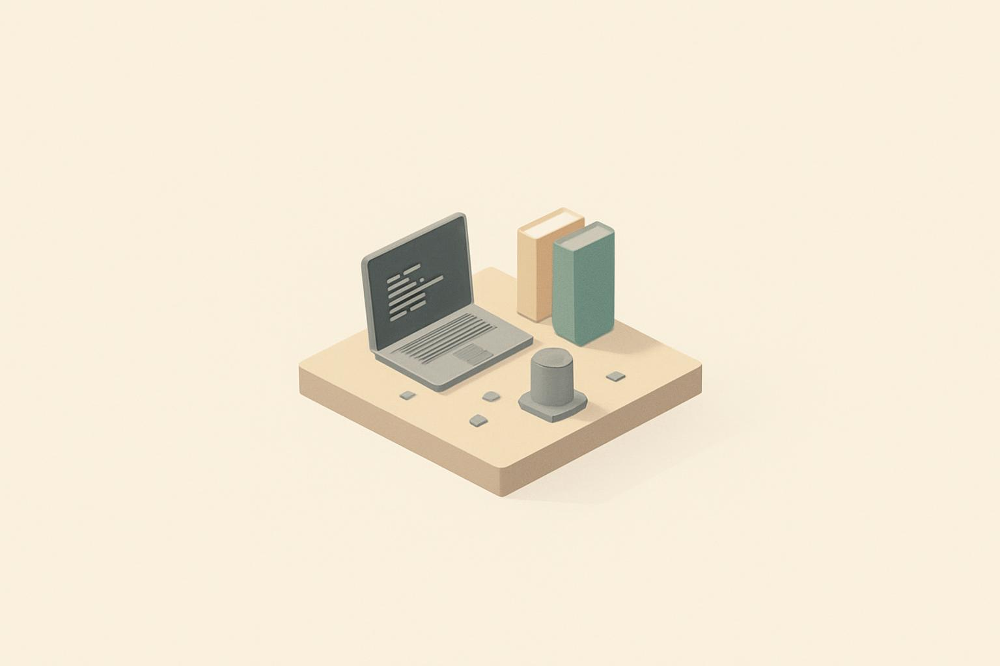

Jalapeño's first results show industry-leading speed and efficiency in AI inference
Jalapeño is OpenAI's custom inference chip. First results show faster, more power-efficient inference — higher throughput and lower latency for modern models — as OpenAI pulls more of the compute stack in-house.
Funding better evaluations of AI's impact on wellbeing
Anthropic is launching a $5 million grant program to fund independent research into how AI impacts users' wellbeing.
Bain & Company joins the Claude Partner Network as a Global Premier partner
Anthropic and Bain & Company are partnering to help enterprises deploy AI, building on Bain's rollout of Claude to its 19,000 employees.
Claude's memory works everywhere, and you decide what's in it
Wherever you work with Claude, it starts from what it already knows about you — and what lives in that memory is up to you.
The full stack behind abundant intelligence
OpenAI CFO Sarah Friar explains how advances across chips, compute, models, and products compound to deliver more useful intelligence at greater scale and lower cost.
Disrupting a new covert influence campaign from Russia
OpenAI banned Russia-origin accounts using AI to promote a fake Israel-based think tank and a "sovereignty" index praising Russia and criticizing the West.
Introducing the Admin plugin for ChatGPT Work and Codex
The Admin plugin lets admins analyze workspace usage, manage members and permissions, adjust limits, and act on admin requests.
How loveholidays is making everyone a builder with Codex
Travel company loveholidays uses OpenAI Codex to make software development accessible across the business, helping teams turn ideas into products faster.
Benchmarks Don't Know Your Job
Every's Context Window on why benchmarks can't measure your real job — plus the number KateBench taught us to count, and a six-agent solar crew deciding whether to run the dryer.

I Tested Claude Code vs. Codex on Design. It Wasn't Even Close.
Nate Herk puts Claude Code and OpenAI Codex head-to-head on design tasks and reports a lopsided result.
Parallel's Parag Agrawal: Building a New Web for AI Agents
Former Twitter CEO and Parallel Web Systems founder Parag Agrawal on building new web infrastructure for AI agents.
Agents Will Use The Web 1,000x More Than We Do
A clip from the Parag Agrawal interview: AI agents will use the web at a scale far beyond humans.
Rich Sutton: synthetic data is "just a big mistake"
RL pioneer Rich Sutton calls synthetic data a big mistake in this interview clip.
Relearning to walk — what AI is missing
Khurram Javed of Oak Lab uses "relearning to walk" to probe what today's AI still lacks.
How AI Changes the Economics of Innovation
a16z on how AI reshapes the cost structure and economics of innovation.
The 3 AI Agency Mistakes Keeping You From $20K/Month Retainers
Nate Herk on three common mistakes that keep AI agencies from landing high-value monthly retainers.
A 35%+ Win Rate Means Your Price Is Too Low
Lenny's Podcast clip: a too-high win rate usually means you're underpricing.
Never Demo to a Room You Haven't Scouted
Lenny's Podcast clip: scout your audience and the room before you demo.
TAM is the last thing YC worries about?
Lenny's Podcast clip: why total addressable market is the last thing YC worries about.
OpenAI 自研推理芯片 Jalapeño 首批结果：速度与能效行业领先
Jalapeño 是 OpenAI 自研的定制推理芯片，首批结果显示推理速度更快、能效更高，为现代模型带来更高吞吐与更低延迟——OpenAI 正把算力栈进一步握在自己手中。
贝恩公司加入 Claude 合作伙伴网络，成为全球顶级合作伙伴
Anthropic 与贝恩公司（Bain & Company）合作帮助企业部署 AI，此前贝恩已向其 19,000 名员工推广 Claude。
loveholidays 如何用 Codex 让人人都能开发软件
旅游公司 loveholidays 借助 OpenAI Codex 让软件开发在全公司触手可及，帮助各团队更快把想法变成产品。
基准测试不懂你的工作
Every 的 Context Window 专栏：基准测试衡量不了真实工作，外加 KateBench 教会我们数的那个数字，以及一个帮忙决定何时开烘干机的六智能体太阳能小组。
我测试了 Claude Code 与 Codex 的设计能力，差距悬殊
Nate Herk 对 Claude Code 与 OpenAI Codex 的设计能力做正面对比测试，结果一边倒。
Parallel 创始人 Parag Agrawal：为 AI 智能体构建新的网络
前 Twitter CEO、Parallel Web Systems 创始人 Parag Agrawal 谈为 AI 智能体打造全新的网络基础设施。